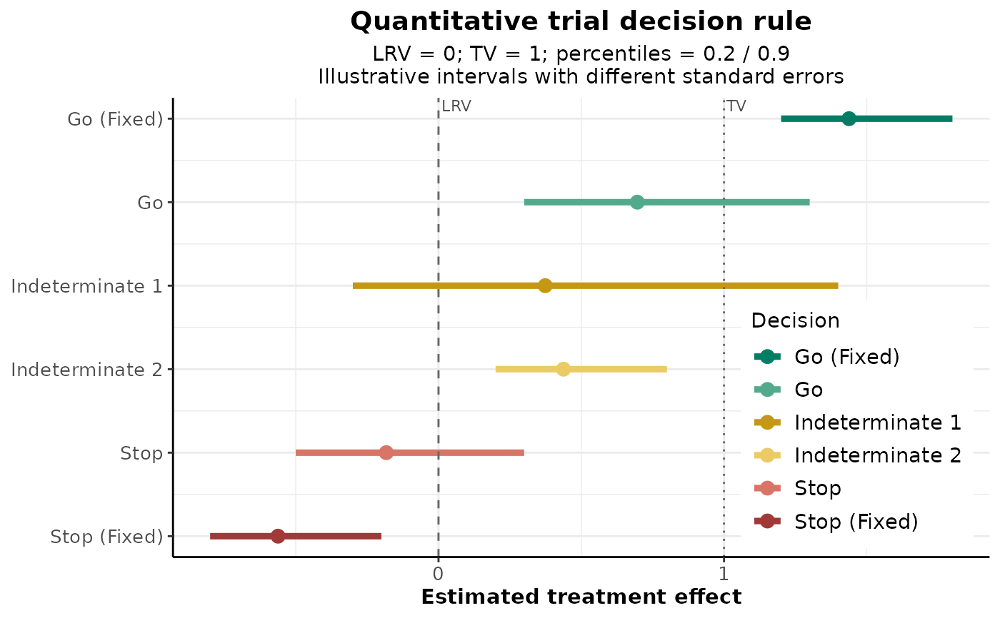
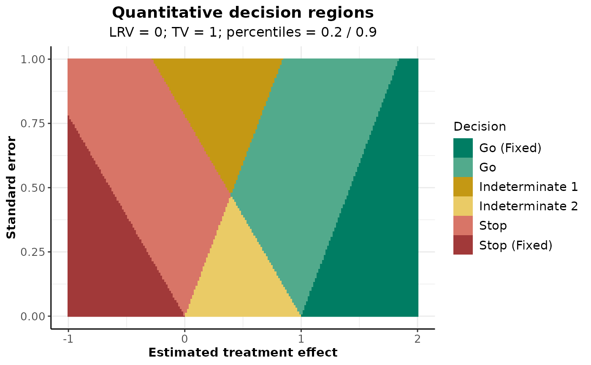
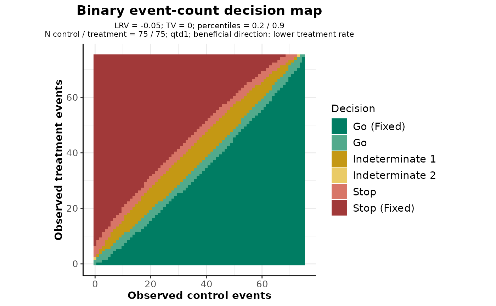
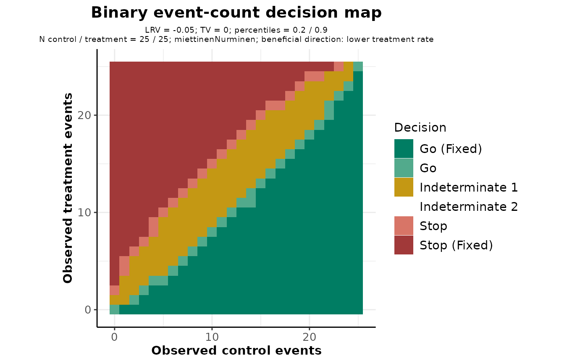

Displays illustrative or observed intervals, decision regions, or a binary event-count decision map for a quantitative decision rule.
Usage
# S3 method for class 'TrialDesignPlanQuantitative'
plot(
x,
...,
type = 1L,
estimates = NULL,
standardErrors = NULL,
labels = NULL,
effectRange = NULL,
standardErrorRange = NULL,
gridSize = 200L,
numberOfSubjects = NULL,
intervalMethod = "qtd1",
directionUpper = TRUE,
controlRate = NULL,
treatmentRate = NULL,
observedControl = NULL,
plotCat = 6L,
main = NA_character_,
xlab = NA_character_,
ylab = NA_character_,
palette = NULL,
legendPosition = "auto",
plotSettings = NULL,
showSource = FALSE
)Arguments
- x
A quantitative rule from
getDesignQuantitative().- ...
Additional arguments are checked for unknown names.
- type
Plot type: 1 for intervals, 2 for normal decision regions, or 3 for a binary event-count decision map. A single matching caption from
getAvailablePlotTypes()is also accepted.- estimates, standardErrors
Numeric vectors supplied together for type 1. If omitted, illustrative intervals with varying standard errors are used.
- labels
Optional labels for the supplied estimates.
- effectRange, standardErrorRange
Increasing numeric pairs defining the displayed ranges for type 2. Defaults are derived from the reference values.
- gridSize
Number of grid values per axis for type 2 (between 2 and 1000).
- numberOfSubjects
For type 3, two positive integers: control and treatment.
- intervalMethod
For type 3, "qtd1" (default), "farringtonManning", "miettinenNurminen", or "newcombe". See Details for the method definitions.
- directionUpper
Whether a higher treatment event rate is beneficial. If FALSE, the effect is control rate minus treatment rate.
- controlRate, treatmentRate
Optional true rates, supplied together for type 3. Exact binomial cell probabilities are then included in the plot data.
- observedControl
Optional observed control event count, highlighted by a vertical reference line in type 3.
- plotCat
Number of decision categories, either 3 or 6.
- main, xlab, ylab
Optional plot title and axis labels.
- palette
Optional rpact color palette. NULL uses semantic decision colors.
- legendPosition
Legend position, including the rpact default "auto".
- plotSettings
Optional object from
getPlotSettings().- showSource
Whether to print the unrounded data used by the plot.
Details
Intervals use estimate + qnorm(percentile) * standardError; the displayed
percentiles do not imply a symmetric two-sided confidence interval. Type 2
plots observed estimates against standard errors, not true effects.
With intervalMethod = "qtd1", type 3 reproduces the QTD1 construction with limits
rounded to four decimal places. Score limits supply the variance terms of
the lower and upper risk-difference limits. Boundary equality follows QTD1:
lower limits equal to LRV or TV satisfy the corresponding lower criterion;
upper limits equal to TV satisfy the target criterion. The event map contains
at most one million cells. With supplied rates, category probabilities can be
obtained by summing cellProbability by category in the returned plot data.
The QTD1 approximation requires lowerPercentile <= 0.5 <= upperPercentile.
"farringtonManning" inverts the risk-difference score test using constrained
maximum-likelihood variance. "miettinenNurminen" uses the same score inversion
with variance multiplied by N / (N - 1), where N is the combined sample size.
"newcombe" combines unrounded Wilson limits by the square-and-add method,
without continuity correction. Each requested percentile is evaluated as a
one-sided bound: below 0.5 the lower-tail construction is used, above 0.5 the
upper-tail construction is used, and at 0.5 the observed difference is returned.
All three additional methods support ordered percentiles anywhere in (0, 1).
They provide frequentist confidence bounds, not posterior quantiles. Counts
are assumed to arise from two independent binomial groups.
References
Farrington and Manning (1990), Statistics in Medicine 9, 1447-1454, doi:10.1002/sim.4780091208. Miettinen and Nurminen (1985), Statistics in Medicine 4, 213-226, doi:10.1002/sim.4780040211. Newcombe (1998), Statistics in Medicine 17, 873-890, doi:10.1002/(SICI)1097-0258(19980430)17:8<873::AID-SIM779>3.0.CO;2-I.
Examples
rule <- getDesignQuantitative(targetValue = 1, lowerReferenceValue = 0)
plot(rule)

plot(rule, type = 2)

binaryRule <- getDesignQuantitative(targetValue = 0, lowerReferenceValue = -0.05)
plot(binaryRule, type = 3, numberOfSubjects = c(75, 75), directionUpper = FALSE)

plot(binaryRule, type = 3, numberOfSubjects = c(25, 25),
intervalMethod = "miettinenNurminen", directionUpper = FALSE)
